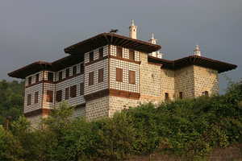
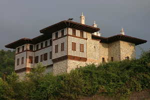

SÜRMENE'NİN YÖRESEL ÜRÜNLERİ
Sürmene Pidesi Hakkında Bilgi
Yılmaz Pide, 1980 yılında Sürmene'de 20 kişilik müşteri kapasiteli bir salonda faaliyetine başladı. Kaliteden ödün vermeden firmamız çok sıra sürede emeğinin karşılığını aldı ve tüm Trabzon halkında çok beğenildi. Müşterilerinin yoğun talebi nedeniyle oturum kapasitesini 80 kişiye çıkardı. Yılmaz Pide'nin bu sektörde başarılı olmasının en önemli nedeni malzeme kalitesinin korunması ve ürünün meydana getirilmesindeki aşamaların titizlikle takip edilmesidir. Yılmaz Pide, 1980 yılından bu güne kadar geçen zamanda edindiği tecrübe ile Karadeniz'de bir marka haline gelmiştir. Sürmene Pidesi deyince akla gelen ilk marka olma özelliğini taşımaktadır.Yılmaz Pide baba mesleği geleneği korumanın yanında, teknolojik yeniliklere ve yeni anlayışlara da açık oldu. 2010 yılının Temmuz ayında 150 kişi oturma kapasiteli ikinci restaurantını açtı. Özel yemekler, toplantılar, iş ve aile yemekleri, küçük organizasyonlar gibi bir çok konuda bölge insanının ihtiyacına yönelik çalışmalar yapan firmamız, kendi markası ile ülke genelinde restaurant zinciri açma projesine start vermiştir. Fabrika üretimi, estetik değerini sağlamlıkla birleştirdiği Sürmene bıçağını ulaşılabilir bir ürün haline getirmiştir, ancak el yapımı meşhur olan Sürmene bıçağı sayılı usta tarafından az miktarda üretilmektedir. Çok az sayıdaki sanatkâr, atalarından kalan bu mirası yaşatmak istediklerini fakat kendilerinden sonra bu mirası devredecekleri bir neslin bulunmadığını esefle dile getiriyor ve bu sanatın yok olması endişesiyle yetkililerden yardım bekliyor. Eğer kurslar açılırsa dünyaca üne kavuşmuş bu sanat yok olmayacaktır.

Sürmene Bıçağı Hakkında Bilgi
Sürmene, Karadeniz kıyısı boyunca sahile paralel bir şekilde uzanan, mavi ile yeşilin birleştiği güzel bir ilçemizdir. Gürül gürül akan dereleri, lezzetini toprağından ve suyundan alan çayı, mimari hususiyetleri ile baş döndüren konakları, Sürmene’yi farklı yapan özelliklerdir. Keskinlik ve dayanıklılığı ile dünyada nam yapmış bıçağı ise Sürmene’nin markalaşmış kültürel bir değeridir. Sürmene bıçağının tarihinin, M.Ö. 1000 yıllarına kadar uzanmakta olduğu rivayet edilir. Maden kaynakları zengin olan bölgenin bıçağının meşhur olmasındaki en önemli sebep, ustaların çeliğe su vermedeki maharetinde saklıdır. Eski tarihlerde çeliğe su verme işi yunus yağı ile yapılmaktaymış. Sonradan yunus yağı yasaklanınca normal su kullanılır olmuş. Eski ustalar yunus yağı ile su verilen bıçakların daha iyi ve keskin olduğunu söylemektedirler.. Sürmene’de ekmek bıçağından satırına, süs bıçağından fileto bıçağına, tıbbi bıçaklardan çakıya kadar birçok bıçak üretilmektedir. Lakin bu bıçakların en meşhuru Sürmene oluklu kamasıdır. Bu kamanın sapı boynuzdan yapılır. Bıçak ustası, ısıttığı boynuza şekil verir ve üzerini gümüşle işler. Sonra dövme çelikten yaptığı 22 cm uzunluğundaki ucu takar ve güzel bir bıçak meydana getirir. Bıçak ustası buna bir de kılıf yapar; dışı buzağı derisinden, iç haznesi kızılağaç odunundan. Kama artık görücüye hazırdır. Sürmene kaması 1950’lere kadar oldukça meşhurdu. 250’ye yakın ev ve iş yerinde imalatı yapılıyordu. Bu tarihlerde neredeyse her delikanlı, elinde Sürmene kaması taşırdı. Ama 1952 yılında tehlikeli silahlar sınıfına alınarak kullanılması ve üretimi yasaklanınca ustaların birçoğu ata yadigârı bu mesleği bırakarak başka yerlere göç etmek zorunda kaldılar. Geride kalanlar, kama olmasa da çakı ve diğer bıçak türlerinin imaliyle meşguller hâlâ. El Yapımı Bıçakçılık Yok Oluyor Sürmene’de el yapımı bıçakçılık, ekonomik sebeplerle yok olmaya yüz tutmuştur. Zira birkaç fabrikada, günümüz ihtiyaçlarına cevap veren ve pazar payı bulabilen bıçaklar üretilmektedir.
Sürmene Memiş Ağa Konağı Hakkında Bilgi
Sürmene'nin 4 km kadar doğusunda, sağda, yol üstünde geniş saçaklarıyla uçmaya hazırlanan kartala benzeyen güzel bir konakla karşılaşılır: Hacı Yakuboğlu Memiş Ağa Konağı. Osmanlı döneminde, eyaletlerin başındaki valiler, çeşitli olanaksızlıklar yüzünden denetimde güçlük çektikleri yörelerde, devlet adına vergi toplayacak, güvenliği sağlayacak yardımcılar seçerlerdi. Bu yardımcılar, o yörede sözü geçen, güçlü, varlıklı kişiler arasından atanırdı. 1700'lerin sonlarında adını duyurmuş olan Hacı Yakuboğlu sülalesine, 1800 başlarında Trabzon valisi tarafından Sürmene ve çevresi için idari görev verilmişti. Kastel'deki konağın yapımının da 1834’lerden sonra olabileceği belirtilir. Memiş Ağa konağı, dış görünüşüyle güçlü, güven verici ve bir yönetici binası olduğunu gösterir özellikler taşır. Memiş Ağa konağı taş duvarları, yerden iyice yükseltilmiş üst katı ve konumu ile hem "kale ev" hem de bir yönetim binası niteliğindedir. Bu görüş, Memiş Ağa'nın çeşitli yöneticilerle burada toplantılar yaptığını, emirlerini buradan verdiğini, hatta zemin katta bulunan zindanda da cezalandırılmış kişilerin tutulduğu yönünde anlatılanlarla doğrulanır. Konak, Sürmene köy evlerinin yapı ve plan geleneklerine uyar. Tek farkı, oda ve mekânların iki kata paylaştırılmış olmasıdır. Konağın zemin katta üç kapısı vardır. Bunlardan ikisi doğu ve batı cephelerinde karşılıklı olarak açılmış, biri de kuzey cephesinde, denize bakan yöndedir. Karşılıklı kapılardan girildiğinde birer küçük giriş mekânından sonra zemin katın güney yarısını kaplayan aşhaneye geçilir. Güney yönünde bir kemerle geçilen, yüksek ve geniş bacalı "ocaklık" yer alır. Aşhanenin her iki yanında, küçük odalar da yerleştirilmiştir. Bunlar, hizmetçi ve görevli odaları diye tariflenir. Zemin katın kuzey tarafındaysa atlar için ahır ve bu işleve yardımcı nitelikte odalar konumlanmıştır. Buraya giriş kuzey kapıdandır. Konağın üst katına, doğu kapısından girer girmez yükselen dik merdivenle ulaşılır. Merdivenin üst başına çok süslü bir korkuluk ve baba direği yerleştirilmiştir. Üst döşemede merdiveni kapatarak alt katla ilişkiyi kesen bir de kapak vardır. Burası, 36 m2 ölçüsünde, oldukça geniş ve aydınlık bir sofadır. Kuzeydoğu ve kuzeybatı köşelerinde özenle yapılmış ve süslenmiş iki oda yer alır. Bunlardan batıdaki "başoda"dır. Başoda önemli konukların ağırlandığı, sohbetlerin yapıldığı bir tür konuk odasıdır. Oymalı taş şömine yaşmağı, şöminenin her iki yanında oyma süslerle bezeli taş dolap ve gözler, duvarların tavana yakın bölümündeki renkli resimler ve nihayet tavanda geometrik bölümlenmeler içine yerleştirilmiş boyalı ahşap kabartma süsler, ev sahibinin gücünü ve özenini ortaya koymuştur. Tavanın tam ortasında, çevresiyle aynı süslere sahip yaklaşık 35 cm.lik yuvarlak bir bölüm, çatı dışına çıkan ve rüzgârla dönen bir mil sayesinde hareket edebilmektedir. Bu sebeple konak "döner tavanlı ev" diye de bilinir. Başodanın güney bitişiğine, sofadan bir kapıyla girilen el yıkama yeri ve tuvalet yerleştirilmiştir. Güneydoğu köşedeki oda ise daha sade süslerle bezenmiştir. Bu odada kadınların toplandığı düşünülebilir. Sofanın güney duvarındaysa üç kapı görülür. Bunlardan ortada olan, güney yönünde uzanan bir koridora açılır. Diğer iki kapı ise sofadan geçilen ve bu koridorun her iki tarafına rastlayan odalardır. Sekileri, şömine ve dolaplarıyla hem gündüz hem de gece yaşantısına hizmet edebilirler. Ancak, ikişer küçük pencereleriyle oldukça karanlık olan bu odalar, daha çok kışın ve yatmak için kullanıldıkları izlenimi verirler. Koridor güneye ucu, doğu-batı yönünde daha kısa bir koridorla T şeklinde kesilmiştir. Kısa koridorun doğu ve batı ucuna birer oda yerleştirilmiştir. Her iki odada da, ikisi güneye açılan üçer pencere vardır. İçeriye dolan güney ışığıyla daha aydınlık olan bu odaların, güneş etkisiyle iyi ısındığı düşünülebilir. Oymalı dolapları, şömine ve sekileriyle burası kadın ve çocukların yaşadığı harem mekânı olsa gerektir. Güney yöne bakan her iki odanın arasına, birkaç basamakla çıkılan küçük bir banyo yerleştirilmiştir.
 
